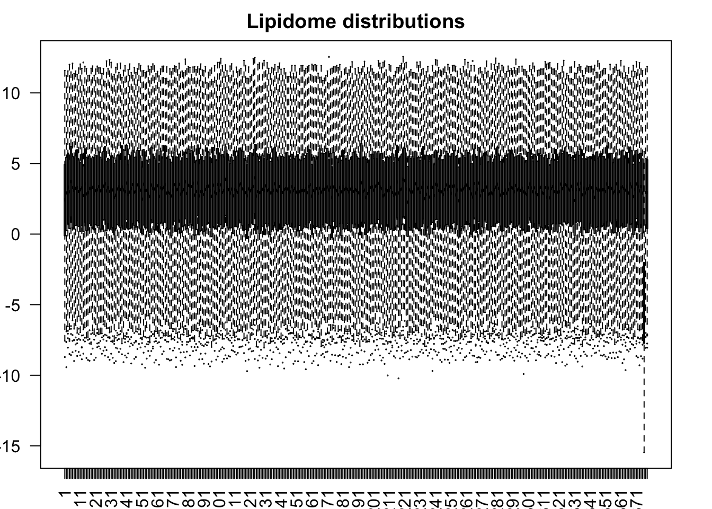
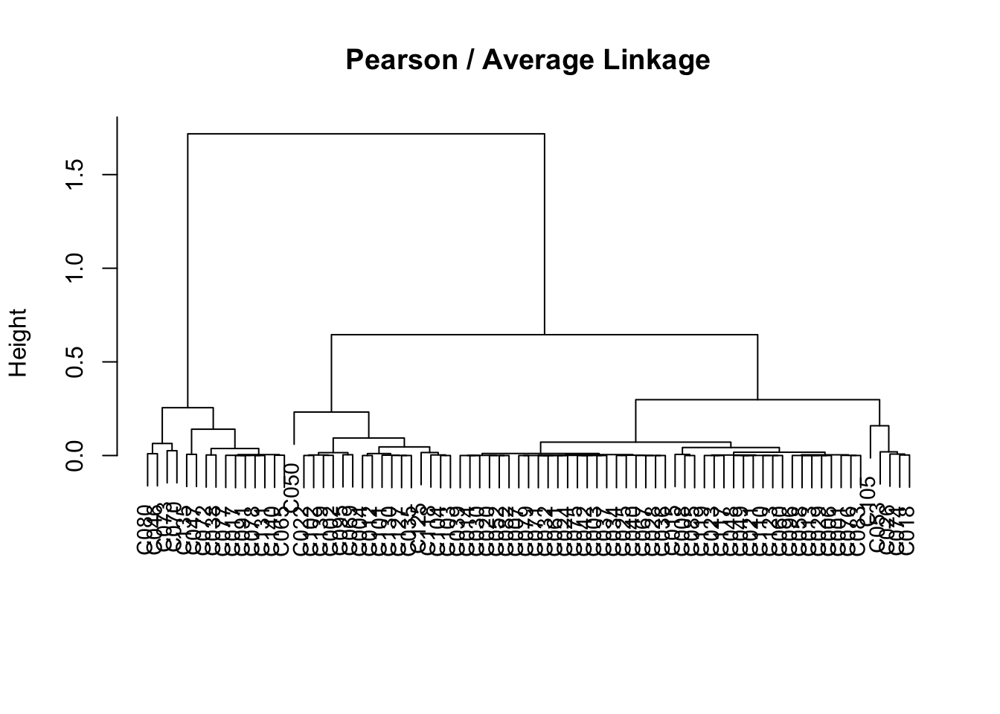
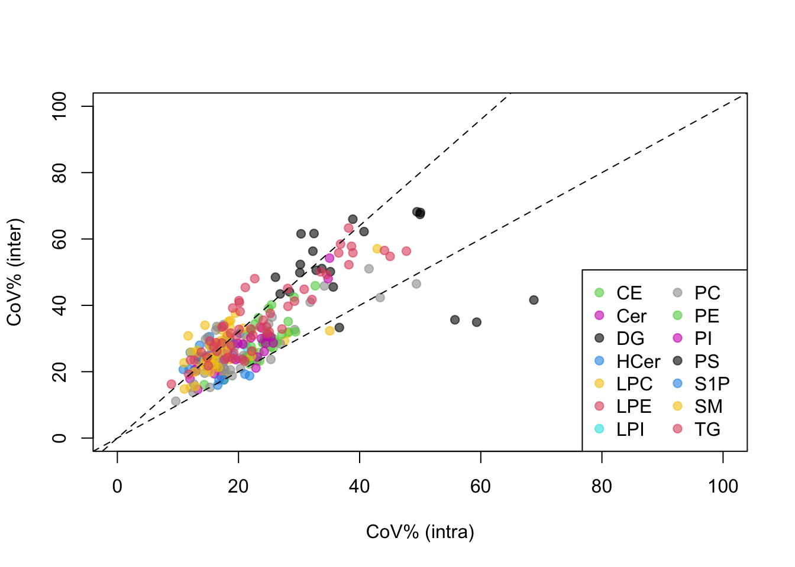
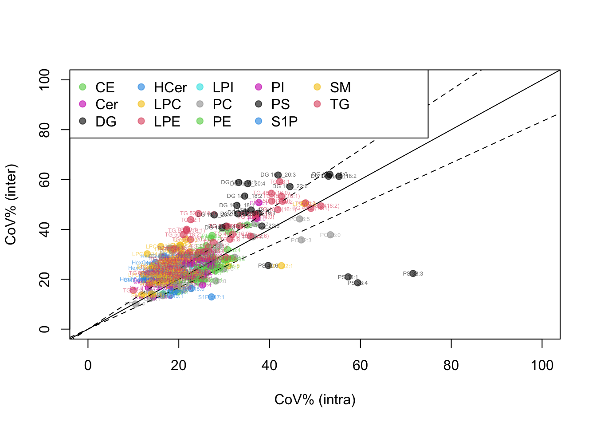

dir.create("Output")Warning in dir.create("Output"): 'Output' already existsIn this part of the workshop, we will explore the quantitative lipidomics data reported from the rigorous quality control process from Part 1. First we create an empty folder (Output) to store graphics and tables we will produce along the way.
dir.create("Output")Warning in dir.create("Output"): 'Output' already existsRead concentration data, plaque volume data, and sample injection sequence table (forcing the software to avoid converting special characters) into R’s workspace from the data folder. In this data, each participant or subject has two to five visits for blood sampling. Meanwhile, each subject visited one more time for coronary artery imaging via computed tomography coronary angiography (CTCA) at the end of the follow-up. The concentration data were thus saved at each visit, or at the sample level, and the plaque data were saved at the subject level.
## (a) qdata refers to quantitative (concentration) data
## - repeated measures (sample level)
qdata = read.delim("data/SPERFECT_concentration_data.txt",
header=TRUE, as.is=TRUE, check.names=FALSE)
## pdata refers to plaque volume data -- at the subject level
## (one CTCA per subject)
pdata = read.delim("data/SPERFECT_plaque_data.txt",
header=T, as.is=T, check.names=F)
## sdata refers to sample information table
## (subjects appearing multiple times)
sdata = read.delim("data/SPERFECT_MS_injection_sequence.txt",
header=T, as.is=T, check.names=F) Note that CTCA could not be performed for all initially recruited subjects. Therefore we need to do some cleaning and matching of molecular, imaging, and other MS-related data (e.g. injection sequence).
The goal of this section is to synchronize the three data sets by filtering and matching subjects across them. Let’s check the concentration data first. We confirm first that each subject was repeatedly sampled multiple times (3 to 5 times mostly).
tmp = t(qdata[,-1]) ## first colume was sample ID (not subject ID!)
par(mfrow=c(1,1), mar=c(2,2,2,2))
boxplot(log2(tmp), cex=.1, las=2, main="Lipidome distributions")
## Uncomment the line to identify the sample with aberrant level
# apply(log2(tmp), 2, function(x) mean(x, na.rm=TRUE))
## It turns out that 376th column
rr = qdata$SampleID[376]
ss = sdata$`Subject ID`[sdata$`Sample ID` == rr]
# This individual has only three data points and we have to remove one.
# He/she will later be disqualified from the analysis.
## Remove from the concentration table
qdata = qdata[-376, ]
## Also remove from the sample info table
sdata = sdata[sdata$`Sample ID` != rr, ] Now there are a few character strings to parse in the sample information table (sdata). For example, the sample identifier column can be broken into batch and order numbers, which are useful for sorting samples in injection sequence.
## Create placeholders
sdata$Batch = NA
sdata$OrderInBatch = NA
## for-loop to parse each entry
for(i in 1:nrow(sdata)) {
## Split the string by underscores
## strsplit function always returns a "list" -- double bracket at the end
tmp = strsplit(sdata$`Sample ID`[i], "_")[[1]]
## gsub changes string A to string B
sdata$Batch[i] = gsub("batch", "", tmp[2])
## in-batch injection sequence is easy
sdata$OrderInBatch[i] = tmp[3]
}
## Change the character strings to numeric values
sdata$Batch = as.numeric(sdata$Batch)
sdata$OrderInBatch = as.numeric(sdata$OrderInBatch)
## Creating unique subject number in the sample information table
usub = unique(sdata$`Subject ID`)
sdata$SIDnum = match(sdata$`Subject ID`, usub) ## numerical ID of subjectsNow we are going to check how many repeated measures each individual subject has. Subjects with two or fewer observations will be removed since we have to compute within-individual coefficients of variation later on, which requires at least three observations. We also remove subjects with no plaque volume data (pdata).
counts = table(sdata$`Subject ID`)
patients = names(counts)
## Find subject IDs with fewer than three observations
remove.id = patients[counts < 3]
## two individuals will be lost: C103, C131
## Remove from the sample information table
remove.index = sdata$`Subject ID` %in% remove.id
sdata = sdata[-remove.index, ]
## We now remove subjects without plaque volume data (outcomes)
all(pdata$`PATIENT CODE` %in% sdata$`Subject ID`) ## evaluates to TRUE[1] TRUEmid = sdata$`Subject ID` %in% pdata$`PATIENT CODE`
sdata = sdata[mid, ]Finally order samples in the the concentration table using the sample ID as the match key.
all(sdata$`Sample ID` %in% qdata$SampleID) ## should evaluate to TRUE[1] TRUEmid = match(sdata$`Sample ID`, qdata$SampleID)
qdata = qdata[mid, ]
rownames(qdata) = qdata$SampleID
qdata = qdata[,-1]Now we have all three data sets aligned in terms of subjects.
Up to this point we only cleaned up the sample and subject information. Our molecular data are lipids – there can be meta data associated with those variables, too. For example, we can export a table of lipid names in the concentration data, and edit it outside R, and read the table back in.
lipids = colnames(qdata)[-1] ## First column => sample ID
## Create a data frame with extra columns
ltab = data.frame(Lipids=lipids, Class=NA, SubClass=NA,
stringsAsFactors=F, check.names=F)
## Write it to a file
write.table(ltab, "data/Lipid_table.txt", sep="\t",
quote=F, row.names=F, na="")
## We now go and change the file name, add class and subclass info in Excel,
## and read it back in.
ltab = read.delim("data/Lipid_table_editted.txt",
header=T, as.is=T, check.names=F)This information will be used repeatedly when we plot the data below.
We will now make copies of the data tables and rearrange the concentration data in order of the sample preparation batch and injection sequence. When we plot the concentration values in this order, we can evaluate batch effects and signal drifts in each analyte.
ord = order(sdata$`Analysis Sequence`)
sdata2 = sdata[ord, ]
qdata2 = qdata[ord, ]
## You can do the same with the newly parsed variables
## Batch and OrderInBatch
## ord = order(sdata$Batch, sdata$OrderInBatch)
## Identify the indices at which batch numbers switch
ticks = diff(as.numeric(sdata2$Batch))
ticks = which(ticks > 0)
nticks = length(ticks)
## Graphics: plot each analyte in one panel in injection sequence
## Color the dots by the extraction batches
pdf("Output/analysis_sequence_plots.pdf", height=8, width=10, useDingbats=F)
par(mfrow=c(3,1))
for(k in 1:ncol(qdata2)) {
plot(qdata2[,k], pch=19, cex=.5, col=sdata2$Batch,
xlab="Analysis Sequence", ylab="Concentrations", main=colnames(qdata2)[k])
for(j in 1:nticks) abline(v=ticks[j]+0.5, lty=2, col=2)
}
dev.off()quartz_off_screen
2 ## Same plot with the dots colored by subject ID
pdf("Output/analysis_sequence_plots_by_subject.pdf", height=8, width=10, useDingbats=F)
par(mfrow=c(3,1))
for(k in 1:ncol(qdata2)) {
plot(qdata2[,k], pch=19, cex=.5, col=sdata2$SIDnum,
xlab="Analysis Sequence", ylab="Concentrations", main=colnames(qdata2)[k])
for(j in 1:nticks) abline(v=ticks[j]+0.5, lty=2, col=2)
}
dev.off()quartz_off_screen
2 Now that we confirmed that we did not have notable shifts between batches and signal drift occurring in most of the analytes, we can move onto the analysis. However, one more cautionary check may be useful: missing data.
any(qdata <= 0)[1] NA## returns NA!
sum(is.na(qdata))[1] 6## Not many, but there are missing data, which will be
## causing troubles when we perform downstream numerical analyses.
## Let's hunt down where the missing values are
col.ct = apply(qdata, 2, function(x) sum(is.na(x)))
col.ct[col.ct > 0]S1P d16:1 S1P d17:1 S1P d18:0 S1P d18:1 S1P d18:2 S1P d19:1
1 1 1 1 1 1 row.ct = apply(qdata, 1, function(x) sum(is.na(x)))
row.ct[row.ct > 0]LT_batch5_65
6 ## Turns out the batch5_65 sample had S1P values missing!Since we don’t have too many missing data and we don’t want to lose subjects, we decide to work with KNN imputation.
## Execute these lines after uncommenting if the package is not installed.
#if (!require("BiocManager", quietly = TRUE))
# install.packages("BiocManager")
#BiocManager::install("impute")
library(impute)
qdata.tmp = log2(qdata) ## molecular concentrations data are usually skewed
qdata.new = impute.knn(as.matrix(qdata.tmp))$dataImportant note: In the original implementation, the algorithm finds K nearest “genes” positioned across the rows of the matrix. In lipidomics, we don’t have that many “genes” (lipids), thus it is actually better to find nearest K “samples” with similar patterns to estimate the missing S1P measurements. So we put samples in the rows, lipids in the columns (contrary to the instruction in impute.knn function).
### Check the imputed values for S1P species
gg = grep("S1P", colnames(qdata.new))
sid = ifelse(rownames(qdata.new) == "LT_batch5_65", 2, 1) ## red dot
cid = ifelse(rownames(qdata.new) == "LT_batch5_65", 2, 0.2)
pdf("Output/S1P_missing_data_confirmation.pdf",
height=8, width=12, useDingbats=F)
par(mfrow=c(3,2))
for(k in gg) {
plot(qdata.new[,k], pch=19, cex=cid, col=sid,
xlab="Analysis Sequence", ylab="Concentrations", main=colnames(qdata2)[k])
}
dev.off()quartz_off_screen
2 For downstream analysis, let’s first merge the plaque data (pdata) into the sample information table (sdata).
mm = match(sdata$`Subject ID`, pdata$`PATIENT CODE`)
sdata = data.frame(sdata, pdata[mm, ], ## you can use merge, dplyr::join family functions
stringsAsFactors=F, check.names=F)
q.med = apply(qdata.new, 2, median)
qdata.norm = sweep(qdata.new, 2, q.med) ## median normalized data, different from qdata.new (log2 transformed, imputed)Before moving onto downstream analyses, let’s re-order the individuals. We use the total lipid-rich plaque volume as ordering variable as it is one of the main outcomes of interest. In case there are many zero volumes (undetected plaques), we also throw in subject number as additional ordering variable.
ord = order(sdata$`total lipid plaq vol index`, sdata$SIDnum)
sdata = sdata[ord, ]
qdata = qdata[ord, ]
qdata.new = qdata.new[ord, ]
qdata.norm = qdata.norm[ord, ]Now let’s draw the heatmap with plaque volumes as row-wise meta information.
#if (!require("BiocManager", quietly = TRUE))
# install.packages("BiocManager")
#BiocManager::install("ComplexHeatmap")
#install.packages("circlize")
#or devtools::install_github("jokergoo/circlize")
library(circlize)========================================
circlize version 0.4.15
CRAN page: https://cran.r-project.org/package=circlize
Github page: https://github.com/jokergoo/circlize
Documentation: https://jokergoo.github.io/circlize_book/book/
If you use it in published research, please cite:
Gu, Z. circlize implements and enhances circular visualization
in R. Bioinformatics 2014.
This message can be suppressed by:
suppressPackageStartupMessages(library(circlize))
========================================library(ComplexHeatmap) Loading required package: grid========================================
ComplexHeatmap version 2.13.1
Bioconductor page: http://bioconductor.org/packages/ComplexHeatmap/
Github page: https://github.com/jokergoo/ComplexHeatmap
Documentation: http://jokergoo.github.io/ComplexHeatmap-reference
If you use it in published research, please cite either one:
- Gu, Z. Complex heatmaps reveal patterns and correlations in multidimensional
genomic data. Bioinformatics 2016.
- Gu, Z. Complex Heatmap Visualization. iMeta 2022.
The new InteractiveComplexHeatmap package can directly export static
complex heatmaps into an interactive Shiny app with zero effort. Have a try!
This message can be suppressed by:
suppressPackageStartupMessages(library(ComplexHeatmap))
========================================## Meta information first
set.seed(12345679)
row_ha = HeatmapAnnotation(Total=anno_barplot(sdata$`Total Plaque vol index`),
Calcified=anno_barplot(sdata$`total calc plaq vol index`),
LipidRich=anno_barplot(sdata$`total lipid plaq vol index`),
Fibrotic=anno_barplot(sdata$`total fibrot plaq vol index`),
annotation_name_rot = 270,
which="row", border=TRUE, show_legend=TRUE)
col_ha = HeatmapAnnotation(LipidClass=ltab$Class,
which="col", border=TRUE, show_legend=TRUE)
## Draw heatmap and save it to a pdf file
pdf("Output/heatmap_lipids.pdf", height=30, width=30)
Heatmap(as.matrix(qdata.norm), name = "Normalized Levels",
cluster_rows = FALSE,
cluster_columns = TRUE,
row_names_gp = gpar(fontsize = 6),
column_names_gp = gpar(fontsize = 8),
column_title = "",
col = colorRamp2(c(-2, 0, 2), c("blue", "white", "red")),
left_annotation = row_ha,
top_annotation = col_ha,
clustering_distance_rows = "pearson",
clustering_method_rows = "average",
clustering_distance_columns = "pearson",
clustering_method_columns = "average"
)
dev.off()quartz_off_screen
2 Principal Component Analysis (PCA): We perform PCA and draw the projection plot on the new axes defined by PC1 and PC2. One we figure out that step, we can then track each individual’s time course trajectory over this map.
tmp = qdata.norm
tmp.pca = prcomp(tmp, scale.=TRUE)
vv = tmp.pca$sdev^2
vv = round(vv / sum(vv) * 100, 2)
print(vv) [1] 23.40 21.27 5.65 5.19 4.24 4.03 3.03 2.61 2.50 1.85 1.71 1.43
[13] 1.31 1.24 1.13 1.01 0.94 0.82 0.69 0.62 0.57 0.53 0.49 0.47
[25] 0.46 0.44 0.42 0.38 0.36 0.35 0.33 0.33 0.29 0.27 0.27 0.25
[37] 0.24 0.23 0.22 0.22 0.21 0.20 0.20 0.18 0.17 0.17 0.17 0.16
[49] 0.16 0.15 0.15 0.14 0.14 0.14 0.13 0.13 0.12 0.12 0.12 0.11
[61] 0.11 0.10 0.10 0.10 0.10 0.10 0.09 0.09 0.09 0.09 0.08 0.08
[73] 0.08 0.08 0.08 0.07 0.07 0.07 0.07 0.07 0.07 0.06 0.06 0.06
[85] 0.06 0.06 0.06 0.06 0.06 0.05 0.05 0.05 0.05 0.05 0.05 0.05
[97] 0.05 0.05 0.05 0.04 0.04 0.04 0.04 0.04 0.04 0.04 0.04 0.04
[109] 0.04 0.04 0.04 0.04 0.04 0.04 0.04 0.03 0.03 0.03 0.03 0.03
[121] 0.03 0.03 0.03 0.03 0.03 0.03 0.03 0.03 0.03 0.03 0.03 0.03
[133] 0.02 0.02 0.02 0.02 0.02 0.02 0.02 0.02 0.02 0.02 0.02 0.02
[145] 0.02 0.02 0.02 0.02 0.02 0.02 0.02 0.02 0.02 0.02 0.02 0.02
[157] 0.02 0.02 0.02 0.02 0.02 0.01 0.01 0.01 0.01 0.01 0.01 0.01
[169] 0.01 0.01 0.01 0.01 0.01 0.01 0.01 0.01 0.01 0.01 0.01 0.01
[181] 0.01 0.01 0.01 0.01 0.01 0.01 0.01 0.01 0.01 0.01 0.01 0.01
[193] 0.01 0.01 0.01 0.01 0.01 0.01 0.01 0.01 0.01 0.01 0.01 0.01
[205] 0.01 0.01 0.01 0.01 0.01 0.01 0.01 0.01 0.00 0.00 0.00 0.00
[217] 0.00 0.00 0.00 0.00 0.00 0.00 0.00 0.00 0.00 0.00 0.00 0.00
[229] 0.00 0.00 0.00 0.00 0.00 0.00 0.00 0.00 0.00 0.00 0.00 0.00
[241] 0.00 0.00 0.00 0.00 0.00 0.00 0.00 0.00 0.00 0.00 0.00 0.00
[253] 0.00 0.00 0.00 0.00 0.00 0.00 0.00 0.00 0.00 0.00 0.00 0.00
[265] 0.00 0.00 0.00 0.00 0.00 0.00 0.00 0.00 0.00 0.00 0.00 0.00
[277] 0.00 0.00 0.00 0.00 0.00 0.00 0.00 0.00#install.packages("scales")
#install.packages("devtools")
#devtools::install_github("r-lib/scales")
library(scales)
# The output will be a multi-page deck of the same PCA plots,
# with each plot showing one subject's trajectory over the PC coordinates.
pdf("Output/PCAplot.pdf", height=12, width=11, useDingbats = FALSE)
par(mfrow=c(3,3))
THRES = max(abs(tmp.pca$x[,1]))
dot.col = alpha(sdata$SIDnum, 0.5)
dot.size = sdata$`Total Plaque vol index`
dot.size = dot.size / mean(dot.size) ## "normal" dot size is 1
##### OVERALL PLOT FIRST
plot(tmp.pca$x[,1], tmp.pca$x[,2],
col=dot.col, pch=19,
cex = dot.size, ### dot size proportional to total plaque volume
xlab="PC1 (23.4%)", ylab="PC2 (21.3%)", main="SPERFECT",
xlim=c(-THRES,THRES), ylim=c(-THRES,THRES))
abline(v=0, lty=2)
abline(h=0, lty=2)
#### Trajectory tracing of individual subjects
#### Per individual --> for loop
subjects = unique(sdata$`Subject ID`)
nsubjects = length(subjects)
mm = match(subjects, sdata$`Subject ID`) ## mapping back to expanded table
subject.col = sdata$SIDnum[mm]
proj = tmp.pca$x[,1:2] ### PC1 and PC2 coordinates only
for(i in 1:nsubjects) {
## Background plot
plot(tmp.pca$x[,1], tmp.pca$x[,2],
col=dot.col, cex=.5,
xlab="PC1 (23.4%)", ylab="PC2 (21.3%)", main=subjects[i],
xlim=c(-THRES,THRES), ylim=c(-THRES,THRES))
abline(v=0, lty=2)
abline(h=0, lty=2)
## Get indices of observations for the corresponding individual
coord = which(sdata$`Subject ID` == subjects[i])
nn = length(coord)
## Draw arrows
for(k in 2:nn) {
x0 = proj[coord[k-1],1]
y0 = proj[coord[k-1],2]
x1 = proj[coord[k],1]
y1 = proj[coord[k],2]
arrows(x0,y0,x1,y1, col=subject.col[i], length=0.07, lwd=1.5)
}
## Put text labels
for(k in 1:nn) {
x1 = proj[coord[k],1]
y1 = proj[coord[k],2]
text(x1, y1, subjects[i], cex=.4, col=subject.col[i])
}
}
dev.off()quartz_off_screen
2 ## Plaque values are all in different absolute levels
## For heatmap visualization, it is necessary to normalize them
## so that they are in the same scale.
pdata2 = pdata[,-1]
rownames(pdata2) = pdata[,1]
for(k in 1:ncol(pdata2)) {
pdata2[,k] = pdata2[,k] / mean(pdata2[,k])
}
## Plot the data
pdf("Output/heatmap_subjects_outcome.pdf", height=10, width=5)
Heatmap(as.matrix(pdata2), name = "Normalized Volumes",
cluster_rows = TRUE,
cluster_columns = TRUE,
row_names_gp = gpar(fontsize = 6),
column_names_gp = gpar(fontsize = 8),
column_title = "Plaque volume",
col = colorRamp2(c(0, 3), c("white", "red")),
clustering_distance_rows = "pearson",
clustering_method_rows = "average",
clustering_distance_columns = "pearson",
clustering_method_columns = "average"
)
dev.off()quartz_off_screen
2 Let’s use hierarchical clustering as the results with three obvious clusters seem to make sense (this may differ slightly from the data published in the paper).
## Use the same distance metric and linkage method used above
dd = as.dist(1-cor(t(pdata2)))
hc=hclust(dd, method="average")
## Visualize the dendrogram
par(mfrow=c(1,1))
plot(hc, main="Pearson / Average Linkage", xlab="", sub="", cex=.9)
clus = cutree(hc, 3)
## Save the subject IDs for individual clusters
C1 = names(clus)[clus == 1] ## Lipid-rich plaque
C2 = names(clus)[clus == 2] ## Low plaque
C3 = names(clus)[clus == 3] ## Calcified plaque
## Assign the group labels onto the sdata object (sample info table)
sdata$Cluster = NA
sdata$Cluster[sdata$`Subject ID` %in% C1] = "Lipid"
sdata$Cluster[sdata$`Subject ID` %in% C2] = "Low"
sdata$Cluster[sdata$`Subject ID` %in% C3] = "Calcified"
sdata$Cluster = factor(sdata$Cluster, levels=c("Low","Lipid","Calcified"))In this section, we explore the overall variance of each lipid species into the within-individual variability (coefficient-of-variation w) and the between-individual variability (coefficient-of-variation g). Theoretically speaking, the former also includes much of the analytical variability, but we will ignore this in this workshop. These measures of variabilities are population-level characteristics of each individual analyte – we are trying to estimate them from this data.
Why do we do this? First of all, it is quite informative – how the variabilities vary across lipid classes in circulating blood. Second, conventionally good biomarkers are the ones with large inter-individual variability and small intra-individual variability. Hence this characterization can help us prioritize the lipid classes that will likely provide useful candidate markers.
First, let’s write a function to compute the coefficient of variation (CoV%) from log-transformed data (mention Canchola et al paper) - the formula is different!
cov.logged = function(x, logbase=2) {
var.x = var(x, na.rm=TRUE)
cv = logbase^(log(logbase) * var.x) - 1
#log function in R is natural log
sqrt(cv) * 100
}Using this function, we approximate the intra-individual variability (CoV_w) as follows.
## compute CoV in each individual
subjects = unique(sdata$`Subject ID`)
nsubjects = length(subjects)
lipids = colnames(qdata.new)
nlipids = length(lipids)
### placeholder to keep CV% values
COVtab = matrix(NA, nlipids, nsubjects)
rownames(COVtab) = lipids
colnames(COVtab) = subjects
for(i in 1:nlipids) {
for(j in 1:nsubjects) {
rid = which(sdata$`Subject ID` == subjects[j])
COVtab[i,j] = cov.logged(qdata.new[rid,i])
}
}
### Order by plaque clusters
groups = sdata$Cluster[match(subjects, sdata$`Subject ID`)]
ord = order(groups)
COVtab = COVtab[,ord]
groups = groups[ord]Let’s visualize the results:
set.seed(12345679)
row_ha = HeatmapAnnotation(Class=ltab$Class,
annotation_name_rot = 270,
which="row", border=TRUE, show_legend=TRUE)
col_ha = HeatmapAnnotation(Group=groups,
which="col", border=TRUE, show_legend=TRUE)
pdf("Output/COV_w.pdf", height=25, width=15)
Heatmap(as.matrix(COVtab), name = "CoV",
cluster_rows = TRUE,
cluster_columns = FALSE,
row_names_gp = gpar(fontsize = 6),
column_names_gp = gpar(fontsize = 8),
column_title = "Plaque Group",
col = colorRamp2(c(20,70), c("white", "red")),
## Note the two color schemes
left_annotation = row_ha,
top_annotation = col_ha,
clustering_distance_rows = "euclidean",
clustering_method_rows = "average",
clustering_distance_columns = "pearson",
clustering_method_columns = "average"
)
dev.off()quartz_off_screen
2 You can try to match the lipids on top with the CoV_w in Figure 3 of Tan et al.
Now, how should we estimate inter-individual CoV? We can approximate this by calculating CoV_g at the averaged (log2) data:
mm = match(subjects, sdata$`Subject ID`)
qdata.avg = qdata.new[mm, ]
for(i in 1:nsubjects) {
rid = which(sdata$`Subject ID` == subjects[i])
## averaging over replicates
qdata.avg[i, ] = apply(qdata.new[rid, ], 2, mean)
}
COVg_vec = rep(NA, nlipids)
for(i in 1:nlipids) {
COVg_vec[i] = cov.logged(qdata.avg[,i])
}Now we average the within-individual CoV (CoV_w) to compare the two CoV’s:
COVw_vec = apply(COVtab, 1, mean)Visualizing this:
## colors for lipid classes
cl = as.numeric(factor(ltab$Class)) * 3
cl = alpha(cl, 0.6) ### opacity
## Scatter plot, with within-individual on the X-axis
## between-individual on the Y-axis
plot(COVw_vec, COVg_vec, xlab="CoV% (intra)", ylab="CoV% (inter)",
xlim=c(0,100), ylim=c(0,100),
pch=19, col=cl)
abline(0,1.6,lty=2) ## shows CoV_g > CoV_w
abline(0,1,lty=2)
## Create a legend
uclass = unique(ltab$Class)
ucolor = cl[match(uclass,ltab$Class)]
legend("bottomright", legend=uclass, col=ucolor, pch=19, ncol=2)
Note: this approximation-based analysis has an issue. It can either over-estimate the CoV_g or under-estimate CoV_w - either or both. The two measures of variabilities have to be simultaneously deconvoluted, not separately. Purely analytical variability (CoV_a) was also ignored, but this can only be estimated using repeated injections of a QC sample.
Here is the formal way to obtain the proper variance parameters from the data (usually done from a population-scale data set). We first get the variance / standard deviation values pertaining to the inter- and intra-individual variabilities using linear mixed effects models:
library(nlme)
sid = sdata$`Subject ID`
sigma_g = rep(NA, nlipids)
sigma_w = rep(NA, nlipids)
names(sigma_g) = names(sigma_w) = ltab$Lipids
## Each lipid
for(j in 1:nlipids) {
if(j %% 20 == 0) print(j) ## print progress every 20th lipid
y = qdata.new[,j]
## Fit LME model with simple random effects
## representing individual specific lipid levels
## (random intercept)
lme.fit = lme(y ~ 1, random = ~1|sid)
## Get the variance component of the random effects
vv = as.numeric(VarCorr(lme.fit)[,2])
sigma_g[j] = vv[1] ## inter
sigma_w[j] = vv[2] ## Rest of the error variance goes to intra
}[1] 20
[1] 40
[1] 60
[1] 80
[1] 100
[1] 120
[1] 140
[1] 160
[1] 180
[1] 200
[1] 220
[1] 240
[1] 260
[1] 280We also write another function that directly translates standard deviation into CoV%:
cov.logged.sd = function(sd.x, logbase=2) {
cv = logbase^(log(logbase) * sd.x^2) - 1 #log function in R is natural log
sqrt(cv) * 100
}and compute intra- and inter-individual CoV% values:
COVw_vec = cov.logged.sd(sigma_w) ## intra-individual CoV (+ analytical)
COVg_vec = cov.logged.sd(sigma_g) ## inter-individual CoVVisualize this:
plot(COVw_vec, COVg_vec, xlab="CoV% (intra)", ylab="CoV% (inter)",
xlim=c(0,100), ylim=c(0,100),
pch=19, col=cl)
abline(0,1.2,lty=2)
abline(0,1,lty=1)
abline(0,1/1.2,lty=2)
legend("topleft", legend=uclass, col=ucolor, pch=19, ncol=6)
text(COVw_vec, COVg_vec, labels = ltab$Lipids, cex=.4, col=cl)
This recovers the main Figure 3 in Tan et al. (except for a few species). Discussion point: which analytes would be the best clinical markers if (hypothetically) all of them were candidates?
Create a new data set containing within-individual standard deviation of log2 concentrations for each lipid species. These values will serve as the “visit-to-visit variability” measures.
mm = match(subjects, sdata$`Subject ID`)
qdata.sd = qdata.new[mm, ]
## For each subject, get stdev
for(i in 1:nsubjects) {
rid = which(sdata$`Subject ID` == subjects[i])
qdata.sd[i, ] = apply(qdata.new[rid, ], 2, sd)
}
rownames(qdata.sd) = subjects
## Get matching plaque volume data
Cluster = sdata$Cluster[mm]
TotalPL = sdata$`Total Plaque vol index`[mm]
CalcPL = sdata$`total calc plaq vol index`[mm]
LipidPL = sdata$`total lipid plaq vol index`[mm]
FibroPL = sdata$`total fibrot plaq vol index`[mm]Now using this new data frame as input, we perform association tests between the visit-to-visit variability and plaque volumes. We first write some functions:
tertiles = function(x) {
qpt = quantile(x, c(0,1/3,2/3,1), na.rm=TRUE)
nx = length(x)
y = rep(1, nx)
for(i in 1:nx) {
for(k in 2:3) {
if(x[i] > qpt[k] & x[i] <= qpt[k+1]) y[i] = k
}
}
#y = factor(y, levels=c(1:3))
y
}
quartiles = function(x) {
qpt = quantile(x, c(0,0.25,0.5,0.75,1), na.rm=TRUE)
nx = length(x)
y = rep(1, nx)
for(i in 1:nx) {
for(k in 2:4) {
if(x[i] > qpt[k] & x[i] <= qpt[k+1]) y[i] = k
}
}
#y = factor(y, levels=c(1:4))
y
}
quartiles(LipidPL) ## test [1] 1 1 1 1 1 1 1 1 1 1 1 1 1 1 1 1 1 1 1 1 2 2 2 2 2 2 2 2 2 2 2 2 2 2 2 2 2 2
[39] 2 2 3 3 3 3 3 3 3 3 3 3 3 3 3 3 3 3 3 3 3 4 4 4 4 4 4 4 4 4 4 4 4 4 4 4 4 4
[77] 4 4 4Now run through the analysis:
pval.T = pval.F = pval.L = pval.C = rep(NA, nlipids)
names(pval.T) = names(pval.L) = names(pval.C) = colnames(qdata.sd)
for(j in 1:nlipids) {
## Total
tmp.test = lm(qdata.sd[,j] ~ quartiles(TotalPL))
tmp.test.0 = lm(qdata.sd[,j] ~ 1)
pval.T[j] = anova(tmp.test, tmp.test.0)$`Pr(>F)`[2]
## Calcified
tmp.test = lm(qdata.sd[,j] ~ tertiles(CalcPL))
tmp.test.0 = lm(qdata.sd[,j] ~ 1)
pval.C[j] = anova(tmp.test, tmp.test.0)$`Pr(>F)`[2]
## Lipid-rich
tmp.test = lm(qdata.sd[,j] ~ quartiles(LipidPL))
tmp.test.0 = lm(qdata.sd[,j] ~ 1)
pval.L[j] = anova(tmp.test, tmp.test.0)$`Pr(>F)`[2]
## Fibrotic
tmp.test = lm(qdata.sd[,j] ~ quartiles(FibroPL))
tmp.test.0 = lm(qdata.sd[,j] ~ 1)
pval.F[j] = anova(tmp.test, tmp.test.0)$`Pr(>F)`[2]
}We visualize the lipids of which the visit-to-visit variability is associated with the lipid-rich plaque volume:
## Again, homogenizing the levels across different plaque types
## to synchronize colors in the heatmap
qdata.sd.norm = qdata.sd
for(k in 1:ncol(qdata.sd)) qdata.sd.norm[,k] = qdata.sd.norm[,k] / mean(qdata.sd.norm[,k])
### Lipid-rich plque
ord = order(LipidPL)
col_ha = HeatmapAnnotation(Cluster=Cluster,
Total=anno_barplot(TotalPL),
Calcified=anno_barplot(CalcPL),
LipidRich=anno_barplot(LipidPL),
Fibrotic=anno_barplot(FibroPL),
which="col", border=TRUE, show_legend=TRUE)
sel = pval.L <= 0.1
row_ha = HeatmapAnnotation(LipidClass=ltab$Class[sel],
which="row", border=TRUE, show_legend=TRUE)
set.seed(12345679)
pdf("Output/SDassociation_heatmap_LipidRich.pdf", height=6, width=9)
X = as.matrix(qdata.sd.norm)[,sel]
Heatmap(t(X), name = "CoV",
cluster_rows = TRUE,
cluster_columns = FALSE,
row_names_gp = gpar(fontsize = 6),
column_names_gp = gpar(fontsize = 8),
column_title = "Plaque Group",
col = colorRamp2(c(0.5,2), c("white", "red")),
left_annotation = row_ha,
top_annotation = col_ha,
clustering_distance_rows = "euclidean",
clustering_method_rows = "average",
clustering_distance_columns = "pearson",
clustering_method_columns = "average"
)
dev.off()quartz_off_screen
2 Results are slightly different from the published results because we cannot reveal gender and age in this data set (due to the risk of re-identifiability).